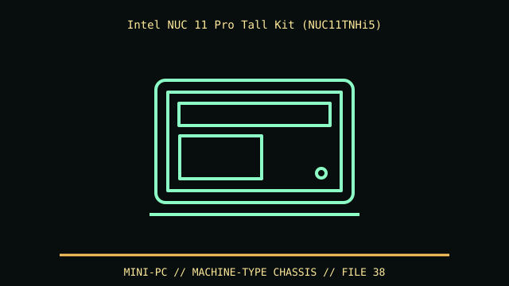

[ IDENTIFIED ENCLOSURE // INTEL NUC 11 PRO TIGER CANYON TALL KIT NUC11TNHI5 ]
Intel NUC 11 Pro Tall Kit (NUC11TNHi5)
117 × 112 × 54 mm (W × D × H) tall chassis; slim NUC 11 Pro is 37 mm high and is a different enclosure.

VARIANT / ARCHIVAL CAVEAT: NUC11TNHi5 is a tall barebones kit; NUC11TNKi5 slim and fully assembled NUC11TN variants differ in enclosure and bundled adapter. Verify full product code.
Mechanical specifications and fit
| Catalog identity | Intel NUC 11 Pro Tiger Canyon tall kit NUC11TNHi5 |
|---|---|
| Dimensions and clearances | 117 × 112 × 54 mm (W × D × H) tall chassis; slim NUC 11 Pro is 37 mm high and is a different enclosure. |
| Drive bays / mounts | One 2.5-inch SATA position in tall chassis plus M.2 2280 storage; slim variant lacks the 2.5-inch bay. |
| Board, system and compatibility | Proprietary NUC board, external 19 V adapter and VESA mount; no standard board fit. Memory uses SO-DIMMs and wireless assembly is chassis-specific. |
| Revision / identification | NUC11TNHi5 is a tall barebones kit; NUC11TNKi5 slim and fully assembled NUC11TN variants differ in enclosure and bundled adapter. Verify full product code. |
Preservation and installation notes
NUC11TNHi5 is a tall barebones kit; NUC11TNKi5 slim and fully assembled NUC11TN variants differ in enclosure and bundled adapter. Verify full product code.
Proprietary NUC board, external 19 V adapter and VESA mount; no standard board fit. Memory uses SO-DIMMs and wireless assembly is chassis-specific.
- Capture the complete model/SKU, serial/date label, board assembly and bay/backplane/riser identifiers before disassembly; keep matched screws, trays, carriers, feet and cables with the case.
- Check the cited manual's specific build option before transferring hardware. Published maximum GPU, drive, fan or radiator capacity may not be simultaneous when a removable cage or alternative riser occupies that volume.
- For rack and vintage systems, preserve the exact rails, shields, doors, brackets and model-specific safety instructions; do not infer compatibility from a familiar brand or physical connector shape.
Manufacturer manuals and archival sources
- Intel NUC 11 Pro Tiger Canyon product briefPrimary manufacturer or model-specific technical/manual reference used for the identification and mechanical data above.
- Intel NUC11TNHi5 official product recordSecond product manual, manufacturer resource or established technical archive; choose the exact regional SKU and revision.
When exact dimensions depend on configuration, the text says so; verify the measured specimen before making a fit or restoration decision.